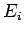
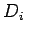
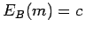
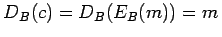
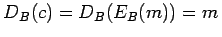
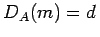
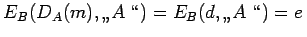
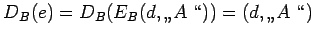

Inhalt Index DeskTop Bronstein

 Algebra und Diskrete Mathematik Kryptologie Verfahren mit öffentlichem Schlüssel
Algebra und Diskrete Mathematik Kryptologie Verfahren mit öffentlichem Schlüssel


Das Konzept der Verfahren mit öffentlichem Schlüssel wurde 1976 von DIFFIE und HELLMAN entwickelt. Jeder Teilnehmer verfügt über einen öffentlichen Schlüssel, der in einem allgemein zugänglichen Verzeichnis veröffentlicht wird, und einen privaten Schlüssel, der nur dem jeweiligen Teilnehmer selbst bekannt ist und streng geheim gehalten wird. Solche Verfahren nennt man
asymmetrische Chiffrierverfahren.
Der öffentliche Schlüssel des i-ten Teilnehmers bestimmt den Chiffrierschritt ; der private Schlüssel KSi des i-ten Teilnehmers bestimmt den Dechiffrierschritt . Es müssen folgende Bedingungen erfüllt sein:
Möchte A eine Nachricht m verschlüsseln und an B senden, dann entnimmt A aus dem Verzeichnis den öffentlichen Schlüssel KPB von B und legt damit die Verschlüsselungsfunktion EB fest: .
A sendet nun den Schlüsseltext c über das öffentliche Netz an  , und B kann den Klartext der Nachricht mit Hilfe seines privaten Schlüssels KSB bestimmen, der die Entschlüsselungsfunktion DB festlegt: .
, und B kann den Klartext der Nachricht mit Hilfe seines privaten Schlüssels KSB bestimmen, der die Entschlüsselungsfunktion DB festlegt: .
Um das Fälschen von Nachrichten zu verhindern, kann A in einem Signaturverfahren mit öffentlichem Schlüssel seine Nachricht m an B wie folgt signieren: A verschlüsselt den Klartext m mit seinem privaten Schlüssel gemäß , fügt dem Text seine Unterschrift ,,A`` hinzu und verschlüsselt den unterschriebenen Text d mit dem öffentlichen Schlüssel von B: . Der so signierte Text wird von A an B geschickt.
Der Teilnehmer B entschüsselt den Text mit seinem privaten Schlüssel und erhält
. Aus diesem Text erkennt B den Absender A und kann nun den Text d mit dem öffentlichen Schlüssel von A entschlüsseln:  .
.